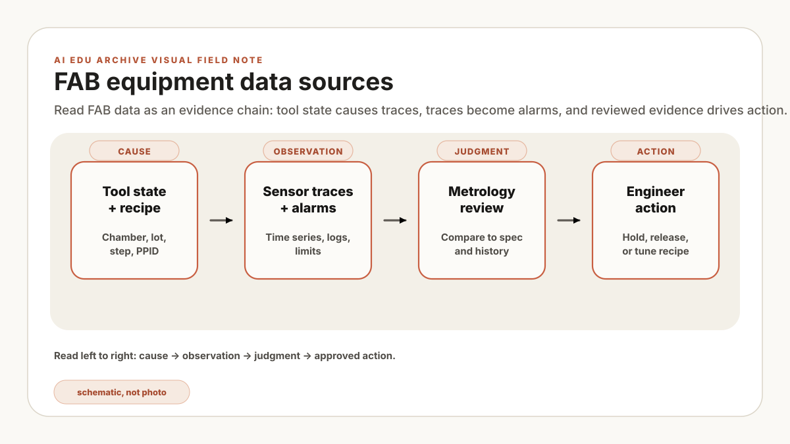

야간 run의 trace export와 다음 날 올라온 계측 결과를 wafer ID로 연결했더니 결과 행이 원본보다 두 배 가까이 늘어납니다. 화면에는 같은 wafer가 여러 chamber run에 붙어 있고, 한쪽 시각은 event time, 다른 쪽은 upload time입니다. 여기서 모델을 돌리면 중복 관계를 학습 신호로 오해할 수 있습니다. 현장에서 흔한 데이터 오류를 합친 가상 장면이며 실제 사업장의 행 수나 사건이 아닙니다.
모델 후보표 대신 데이터 연결표를 만드세요. wafer_id, lot_id, tool_id, chamber_id, recipe_revision, run_start, run_end, metrology_time을 손보정 없이 연결하고, 조인 전후 행 수와 미연결 비율을 함께 남깁니다. 한 번이라도 Excel 수동 매핑이 필요하면 그 파일도 owner와 갱신 주기가 필요한 source입니다.
기술적으로 먼저 권하는 일은 모델 선정이 아니라 한 run의 증거 사슬을 손보정 없이 재현하는 것입니다. RAG, FDC, virtual metrology는 서로 다른 문제를 풀지만 신호의 소유자, 기준 시각, recipe revision, 접근 권한과 사용 금지 범위를 알아야 한다는 점은 같습니다. 이 정보가 없으면 결과가 틀렸을 때 원본 데이터와 전처리 중 어디를 되짚어야 할지 알 수 없습니다.
특히 개인 폴더의 SOP 사본, 오래된 alarm export, 단위가 빠진 CSV는 원본 시스템과 나란히 놓였을 때 구분이 잘 되지 않습니다. 벡터 DB나 분석 테이블에 넣기 전에 source of truth와 최신성 규칙을 붙여야 검색 결과가 문서처럼 보여도 실제 개정 상태를 확인할 수 있습니다.
RAG는 관리된 문서함에서 맞는 문서를 꺼내 답하는 일입니다. FDC는 run 중 설비 trace를 보는 일입니다. Virtual metrology는 모든 wafer를 계측할 수 없을 때 계측값을 예측하는 일입니다. 셋 다 데이터 label이 엉성하면 금방 무너집니다.
왜 AI보다 먼저인가
파일럿 범위를 정하기 전에 아래 질문에 답해 두면, 이후 오류가 데이터 문제인지 모델 문제인지 분리하기 쉬워집니다.
- 이 데이터의 source of truth는 어느 시스템인가?
- 현재 revision인가, 누군가 로컬에 복사해둔 파일인가?
- timestamp는 event time인가, collection time인가, upload time인가, engineer edit time인가?
- 모든 사용자가 봐도 되는 데이터인가, retrieval에 권한 필터가 필요한가?
- tool, chamber, recipe, lot, wafer, product, shift, owner가 식별되는가?
- 절대 indexing, summarization, export를 하면 안 되는 데이터는 무엇인가?
작은 데모에서는 한 사람이 파일 의미를 기억해 빈칸을 메울 수 있습니다. 운영 단계에서는 담당자가 바뀌고 데이터가 갱신되므로 같은 방식이 유지되지 않습니다. 질문마다 원본과 개정 상태를 다시 확인해야 한다면 아직 자동화할 준비가 덜 된 것입니다.
일곱 가지 데이터 묶음
처음 AI 지도를 만들 때 회사의 모든 DB table을 다 펼칠 필요는 없습니다. 설비/공정 엔지니어가 자연스럽게 이해하는 일곱 묶음부터 시작하면 됩니다.
| 데이터 묶음 | 쉬운 뜻 | 주요 AI 활용 | 첫 품질 확인 |
|---|---|---|---|
| Trace data | pressure, RF power, gas flow, temperature, endpoint, motor current, valve state 같은 time-series signal. | FDC, anomaly detection, golden run 비교, virtual metrology. | recipe step과 wafer/lot context에 맞춰 정렬되는가? |
| Alarm/event log | tool alarm, warning, state change, host message, operator acknowledgement. | alarm triage, downtime 분석, maintenance assistant, incident review. | alarm code가 readable name과 severity로 매핑되는가? |
| Recipe/process setting | setpoint, recipe version, chamber condition, step sequence, product mapping. | process window review, change impact analysis, recipe comparison. | released version과 effective date를 증명할 수 있는가? |
| Lot/wafer context | lot, wafer, product, route, operation, chamber, carrier, hold/release history. | RCA, yield excursion review, commonality analysis. | trace, metrology, alarm이 같은 lot/wafer로 join되는가? |
| Metrology/inspection | thickness, CD, overlay, defect count, wafer map, review image, pass/fail result. | virtual metrology, yield prediction, defect classification, drift monitoring. | unit, sampling plan, measurement timing이 질문과 맞는가? |
| Maintenance record | PM history, parts replacement, chamber clean, ticket note, technician comment. | predictive maintenance, PM interval review, ticket summarization. | free-text note를 믿을 만큼 표현이 일관적인가? |
| Documents/knowledge | SOP, troubleshooting guide, spec sheet, training note, engineering memo. | RAG, onboarding, agent explanation, controlled answer generation. | revision, owner, access level, superseded status가 명확한가? |
"데이터는 다 있습니다"라는 답을 들으면 wafer 하나를 골라 tool trace, alarm history, recipe revision, metrology result, maintenance state까지 손보정 없이 연결해 봅니다. 중간에 Excel 매핑표가 필요하다면 그 매핑표의 소유자와 갱신 규칙부터 데이터 설계에 포함해야 합니다.
챔버 예시
설명을 위해 단순화한 가상 사례입니다. Dry etch chamber에서 CD drift가 특정 시간대에 간헐적으로 보이고, 엔지니어가 그 구간의 원인을 조회하는 assistant를 만들려 합니다. 이 질문은 한 테이블만으로 답할 수 없으므로 아래 source와 시각 기준을 함께 연결해야 합니다.
- Trace: 문제 recipe step의 pressure와 RF power.
- Recipe: 정확한 recipe revision과 해당 shift 전후 setpoint 변경.
- Lot context: product, route, operation, chamber, wafer order, hold history.
- Metrology: CD 측정 시점, 계측 장비, sampling plan, unit.
- Alarm: run 중 warning과 acknowledge됐지만 미해결인 event.
- Maintenance: 최근 PM, chamber clean, part replacement, leak check, technician note.
- Documents: current troubleshooting guide, known issue memo, control plan.
Source마다 owner, 갱신 주기, 권한, 실패 형태가 다릅니다. trace는 촘촘해도 join key가 불완전할 수 있고, maintenance note는 유용해도 표현이 제각각일 수 있습니다. recipe는 released version과 local copy가 섞이기 쉽고, 문서는 superseded 상태를 놓치면 안 됩니다. 이 차이를 manifest에 적어야 조회 결과의 한계를 설명할 수 있습니다.
설명을 위한 가상 입력으로 trace run 10건과 metrology 10건이 있다고 가정합니다. 가정: 한 run에는 같은 sampling plan의 계측 결과 하나만 연결돼야 합니다. 중간 확인: 고유 run 7건은 1:1로 연결되고, trace 1건은 metrology 두 행에 연결돼 inner join 출력은 9행입니다. 나머지 trace 2건은 연결되지 않습니다. 판정: 1:1로 확인된 7건만 pilot 후보로 표시합니다. 중복 1건은 wafer 재처리인지 key 오류인지 확인될 때까지 격리하고, 미연결 2건과 함께 학습셋에서 제외합니다. 운영 결과: 단순 연결률보다 7건·1건·2건의 제외 사유가 다시 계산되는지가 승인 기준이 됩니다. 모든 건수와 판정은 형식을 보여주기 위한 예시이며 실제 FAB 기준값이 아닙니다.
Source manifest를 먼저 만든다
Source manifest는 데이터 위치와 취급 조건을 적은 관리표입니다. 첫 RAG나 ML 파일럿에서는 인덱싱 전에 이 표를 만들고, 변경 승인자와 갱신 주기를 정합니다. 아래 값과 식별자는 형식을 보여주기 위한 가상 예시입니다.
| 필드 | 왜 필요한가 | 예시 |
|---|---|---|
| Source name | 모두가 같은 대상을 말하게 합니다. | Etch FDC trace export |
| System of record | 복사 파일이 가짜 truth가 되는 일을 막습니다. | Historian, MES, EAM, QMS, document control |
| Owner | 접근과 변경을 승인할 사람이 필요합니다. | Equipment engineering, process engineering, IT/OT, quality |
| Join keys | AI workflow에는 고립된 row가 아니라 context가 필요합니다. | tool_id, chamber_id, lot_id, wafer_id, recipe_id, timestamp |
| Freshness rule | 얼마나 최신이어야 쓸 수 있는지 정합니다. | 24시간 안에 index, superseded SOP는 block |
| Access level | retrieval이 제한 지식을 새지 않게 합니다. | 전체 엔지니어, module only, owner only, restricted |
| Allowed use | read, summarize, train, export, automate를 구분합니다. | Search only, no training, no external export |
| Known weakness | 데이터가 실제보다 깨끗한 척하지 않게 합니다. | technician note의 part name 표기가 일관적이지 않음 |
source: etch_chamber_trace
owner: equipment_engineering
system_of_record: historian
join_keys:
- tool_id
- chamber_id
- lot_id
- wafer_id
- recipe_step
- event_time
freshness_rule: "run 종료 후 15분 안에 사용 가능"
access_level: "module_engineering_only"
allowed_use:
- anomaly_review
- virtual_metrology_features
- engineer_copilot_context
blocked_use:
- external_export
- automated_recipe_change
known_weakness: "2026 Q2 migration 중 recipe_step label 변경 이력 있음"Do-not-index 목록을 만든다
초심자는 자주 "무엇을 AI에 넣을까요?"라고 묻습니다. 더 좋은 첫 질문은 "아직 넣으면 안 되는 것은 무엇인가요?"입니다. Do-not-index 목록은 demo가 그럴듯해지기 전에 unsafe, stale, noisy, sensitive source를 막아줍니다.
- Superseded SOP: audit용으로 보관하되 active guidance로 retrieval되면 안 됩니다.
- Owner 없는 개인 note: interview에는 유용하지만 authoritative source로는 위험합니다.
- 미승인 recipe copy: model이 released truth처럼 다루면 위험합니다.
- 제한된 yield/customer data: 명확한 access filtering과 purpose control 없이는 쓰면 안 됩니다.
- 품질 낮은 OCR scan: 특히 table과 warning box extraction을 고친 뒤 indexing해야 합니다.
- unit이 섞인 CSV: unit과 calibration context가 명확해질 때까지 block합니다.
junior engineer가 그 source를 묻지 않고 사용했다가 혼날 수 있다면, AI도 조용히 retrieve하면 안 됩니다. Permission-aware retrieval은 고급 기능이 아닙니다. 공장에서는 기본 위생에 가깝습니다.
다음으로 연결되는 것
데이터 바닥이 그려지면 이후 AI roadmap이 훨씬 현실적이 됩니다.
- RAG: 문서마다 owner, revision, freshness rule, access level이 붙습니다.
- FDC: trace signal을 recipe step, chamber, lot, wafer, golden run과 맞출 수 있습니다.
- Virtual metrology: random column이 아니라 공정 context가 있는 feature를 고를 수 있습니다.
- RCA: tool, chamber, recipe, lot, metrology, maintenance fact를 join해 commonality를 볼 수 있습니다.
- Agent: tool을 read-only query, draft, queued action, approved execution으로 나눌 수 있습니다.
다음 단계로 넘어갈 기준은 명확합니다. 질문 하나의 결과를 원본 trace, recipe revision, lot·wafer 문맥과 승인된 문서까지 역추적할 수 있어야 합니다. 이 연결이 재현되면 FDC 기초에서 trace alignment와 golden run을 설계해 볼 수 있습니다. 재현되지 않거나 timestamp·단위·revision 중 하나라도 설명되지 않으면 manifest와 join key를 먼저 고칩니다.